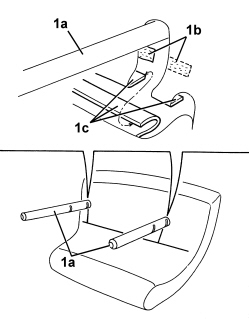
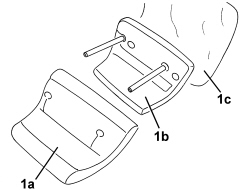

7050D51 COVER FOR REAR SEAT HEAD RESTRAINT (ONE), LEFT OR RIGHT - R.R. WITH HEAD RESTRAINT REMOVED
- Path
- Procedures > 70 FITTINGS > 7050 REAR SEATS > 7050D REAR SEAT TRIM/PADDING > 7050D51 COVER FOR REAR SEAT HEAD RESTRAINT (ONE), LEFT OR RIGHT - R.R. WITH HEAD RESTRAINT REMOVED
- Kind
- repair procedure (removal / refitting; the operation number is the code)
- Applies to
- all engines; all production periods
- Interactive page
- https://sloeber94.github.io/elrnDB/alfa/159/en/#/939011340
Applies to: all engines; all production periods
 Removing
Removing
 Refitting
Refitting1. At the base of the two pins (1a) disconnect the velcro (1b) then release the retainers (1c) for the trim connected to one another.

Applies to: all engines; all production periods
1. Release the cover (1a) from the upholstery (1b) and keep the special fabric (1c).

Applies to: all engines; all production periods
Refitting
Removing- Check that the head restraint cover is not damaged.
- Position the special fabric on the upholstery and fit the cover.
- Mould the cover onto the upholstery.
- Connect the cover retainers to one another, then connect the velcro.